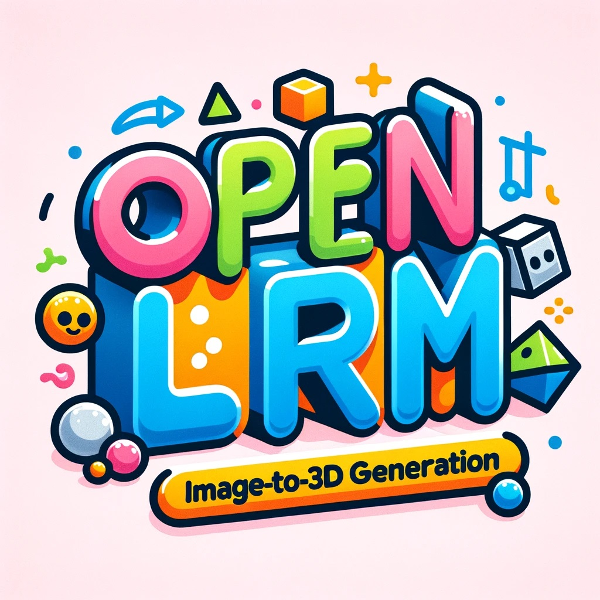
Tengfei Wang
Researcher at Tencent · Leading the World Models Team
I focus on AI-driven multi-modal content generation — images, videos, and 3D assets. I lead the research of HY World model series at Tencent Hunyuan and drive its productization and industry applications.
PhD from HKUST, advised by Qifeng Chen. Researcher at Microsoft Research Asia (2021–2023). Recipient of the HKUST Best PhD Dissertation Award (Honorable Mention).
Served as coach for the HKUST ACM competitive programming team (2019–2023), guiding the team to multiple gold medals.
News
- Jan 2026 · Two papers accepted to ICLR 2026, including one Oral.
- Aug 2025 · Two papers accepted to SIGGRAPH Asia 2025, including one journal paper.
- Feb 2025 · Four papers accepted to CVPR 2025, including two highlight papers.
Open-Source Projects
Shipped and loved by the community.
2025 · Project Lead
HY-World 1.5
★ –Real-time world model with long-term memory and interactive control.
Publications
*equal contribution · ^intern · †corresponding author
2026
Pathwise Test-Time Correction for Autoregressive Long Video Generation
preprint, 2026
Fix accumulation error in long video generation without training.
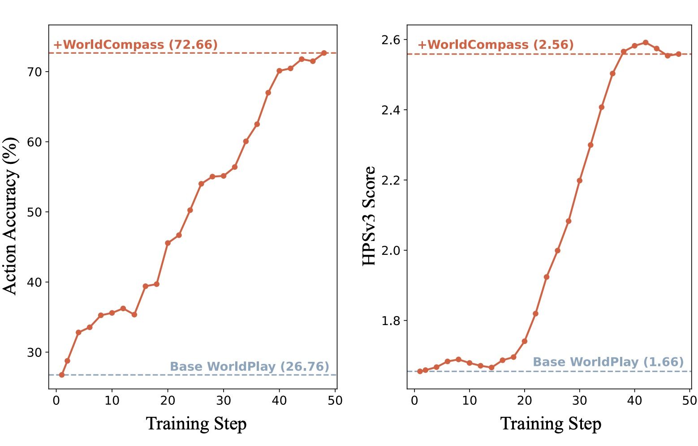
2025
HY-World 1.5: Interactive World Modeling with Real-Time Latency and Geometric Consistency Project Lead
Technical Report, 2025
Real-time world model with long-term memory and interactive control.
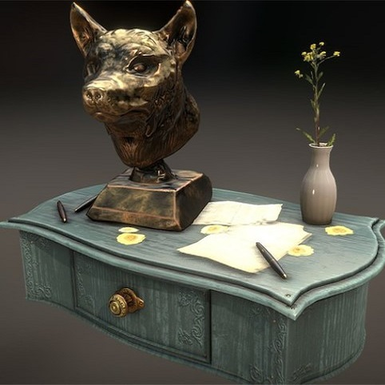
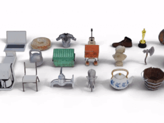
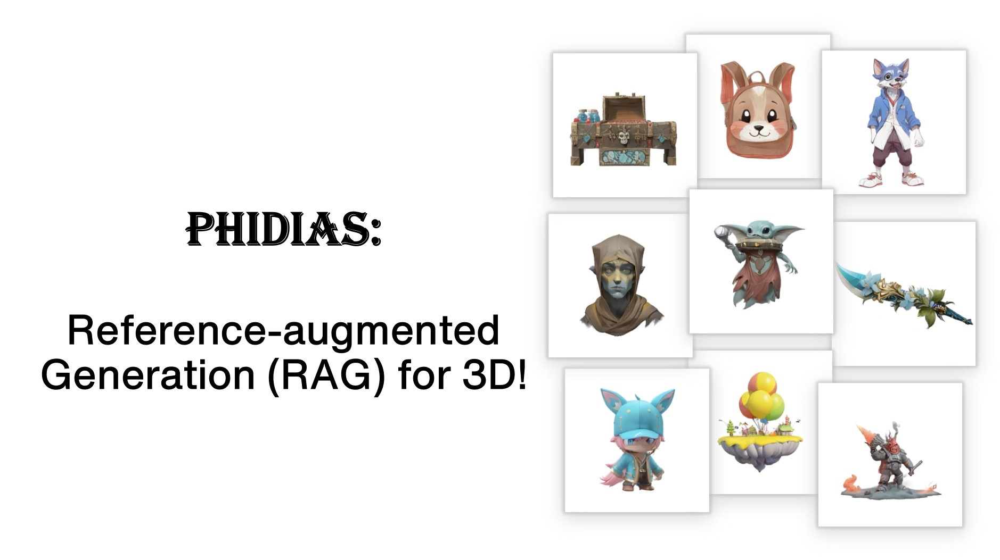
2024
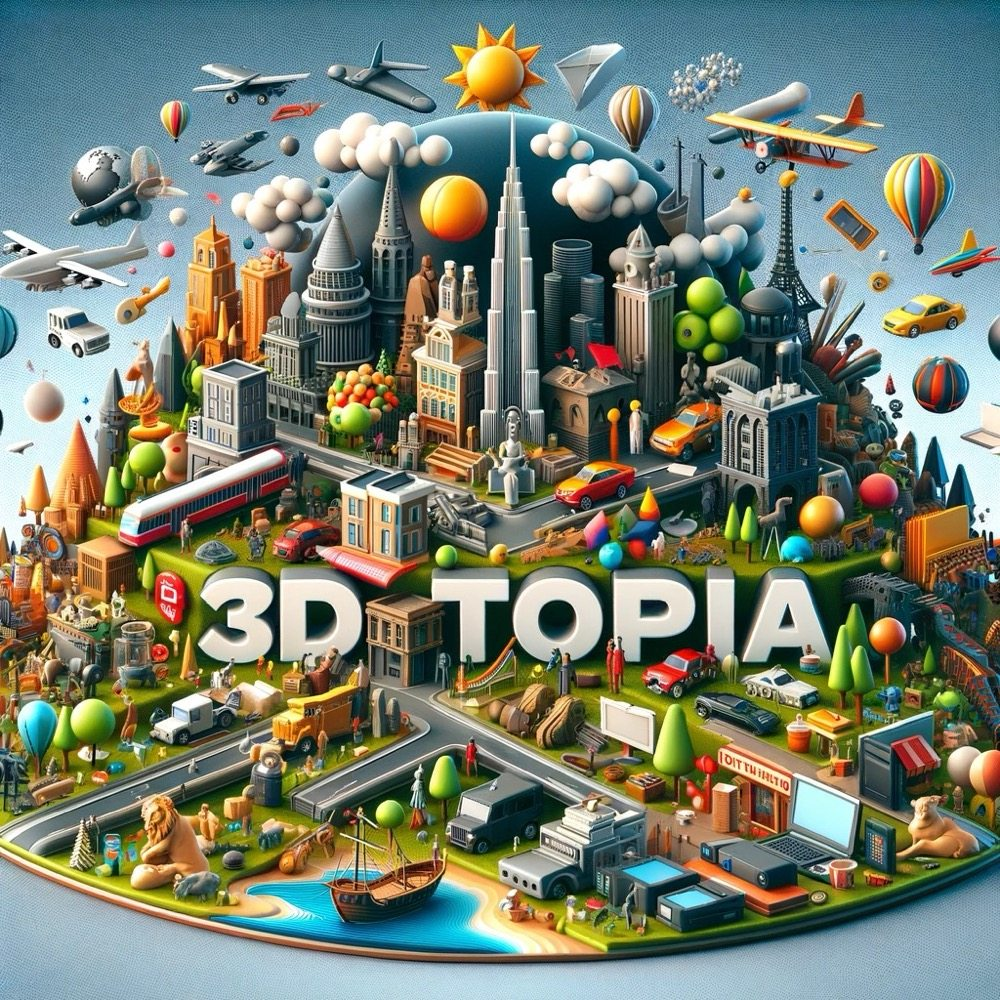
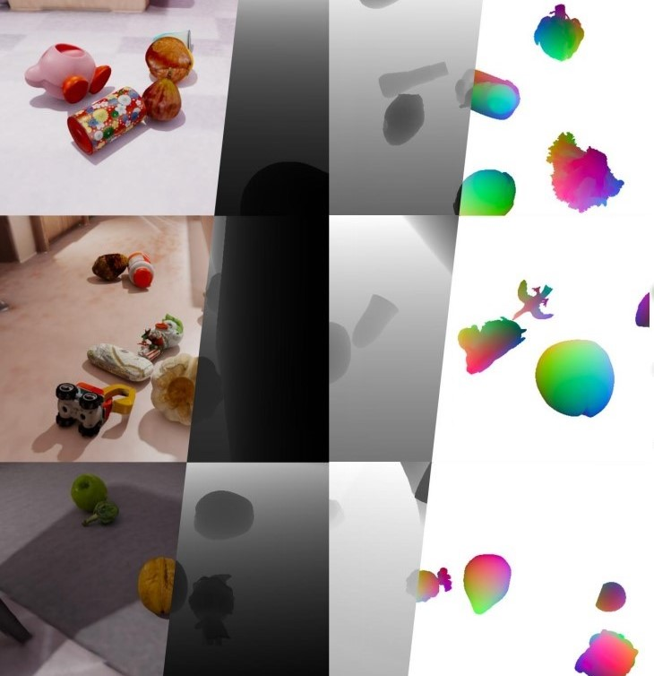
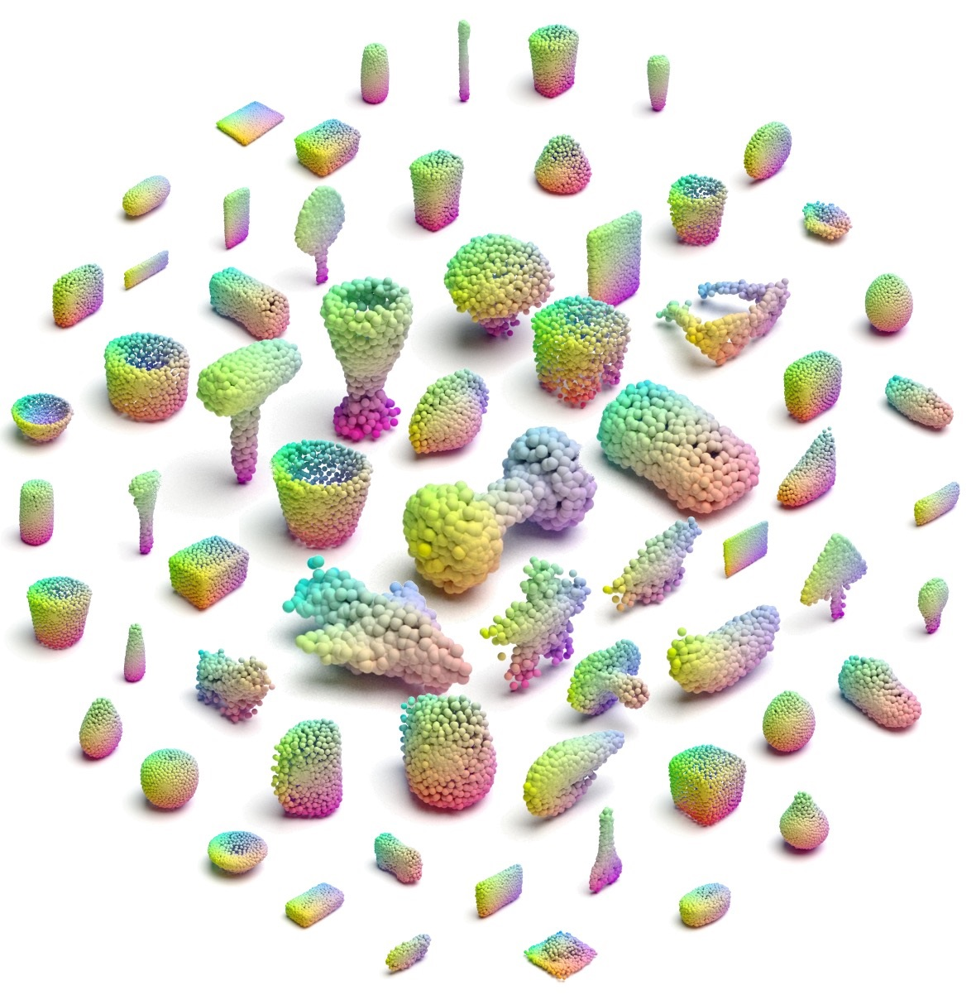
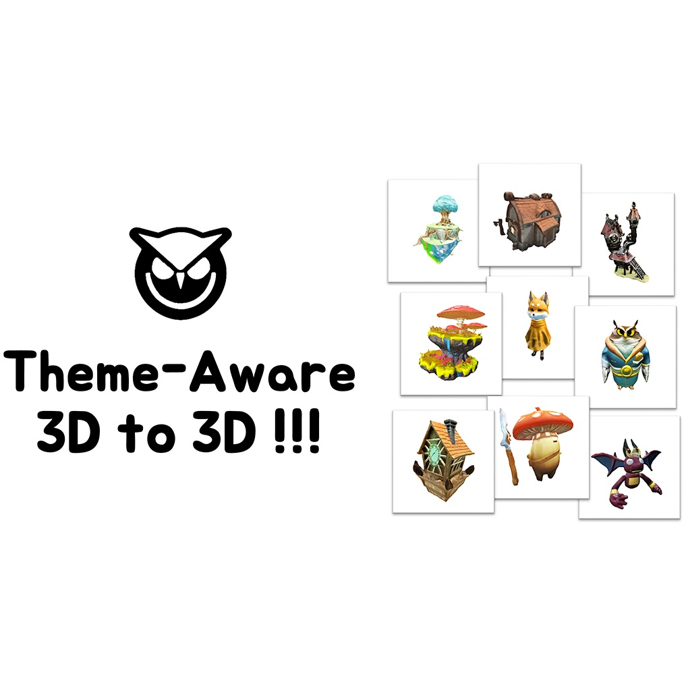
2023
High-Quality Visual Content Creation with Foundation Generative Models Best Dissertation · HM
PhD Thesis · HKUST, 2023
HKUST CSE Best Dissertation Award · Honorable Mention.
2022
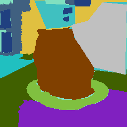
2021
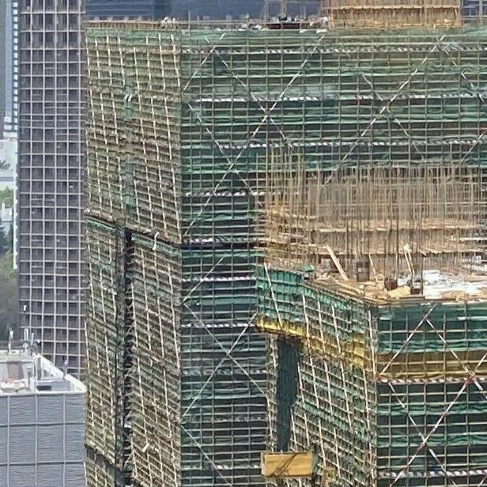
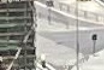
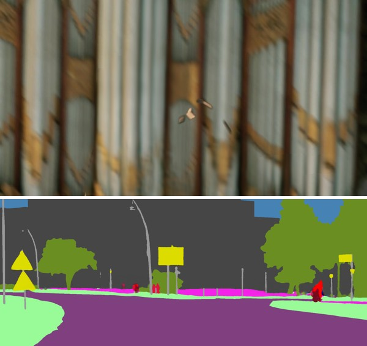
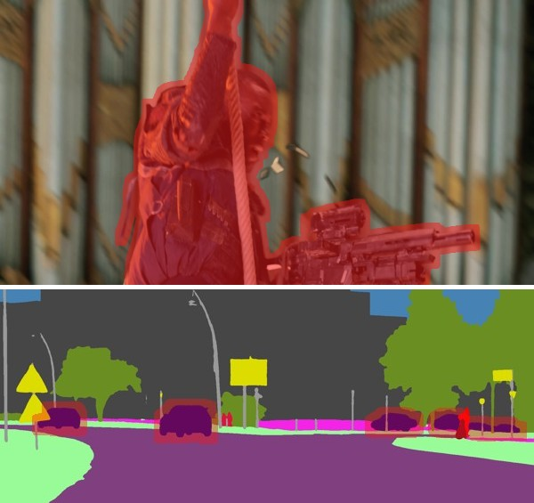
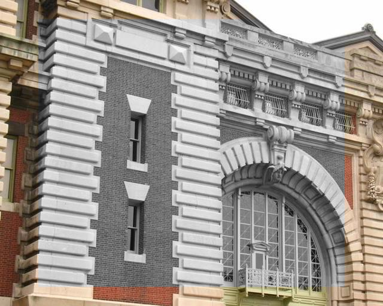
Services
- Program Committee / Reviewer · CVPR, ICCV, ECCV, SIGGRAPH, SIGGRAPH Asia, NeurIPS, ICLR, ICML, AAAI, 3DV, TOG, TPAMI, IJCV, TVCG, TIP, TMM
- Assistant Coach · HKUST ACM Team (2019–2023)
Selected Awards
- CSE Best PhD Dissertation Award · Honorable Mention, HKUST
- Outstanding Scholarship, HKUST
- National Scholarship, Education Ministry of China